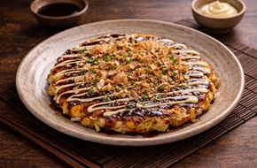
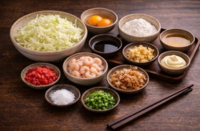
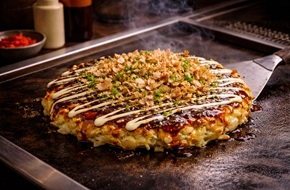

Okonomiyaki
Okonomiyaki is a savory Japanese pancake made with cabbage, batter, and various ingredients. It is cooked on a flat grill and topped with a rich sauce, mayonnaise, and bonito flakes.

Okonomiyaki is a savory Japanese pancake made with cabbage, batter, and various ingredients. It is cooked on a flat grill and topped with a rich sauce, mayonnaise, and bonito flakes.

